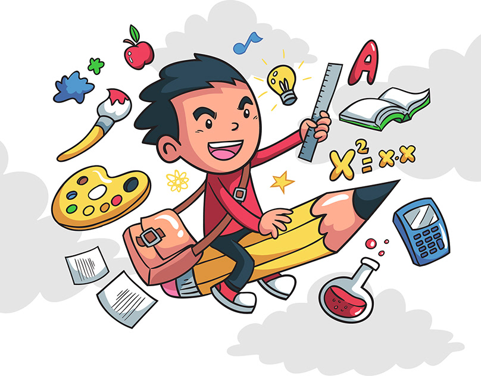

Представь себя
Этап №3
Давайте познакомимся
Давай
Мои увлечения
Мои сильные стороны
Об вызове и реализации
Мои увлечения
Мои сильные стороны
Об вызове и реализации
Мои увлечения
Мои сильные стороны
Об вызове и реализации
😊
Мои интересы и достижения
Нажмите на фотографию
